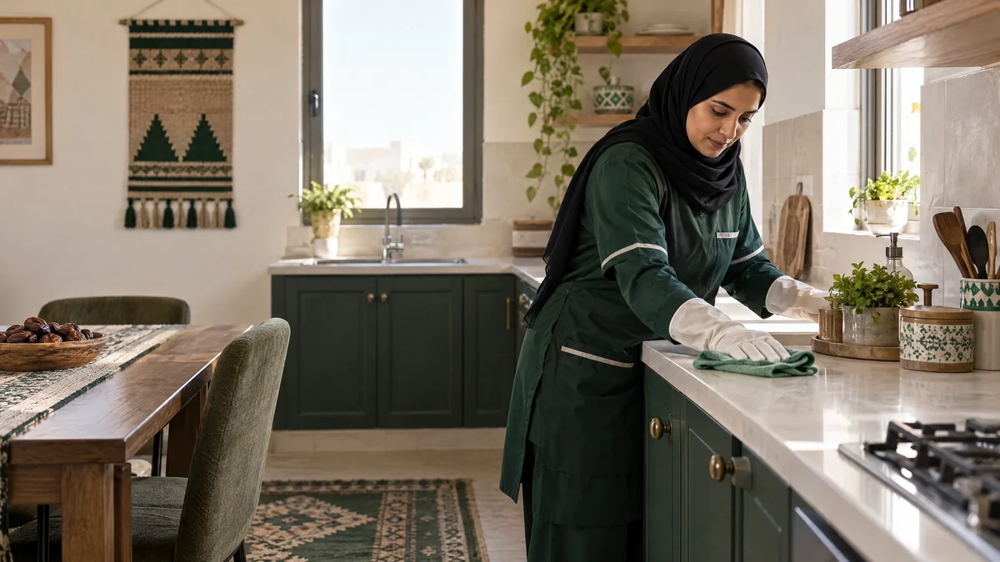

مقدمة: شركة تنظيف في حائل
في حائل، يساعد التنظيف المنتظم على الحد من تراكم الغبار في المداخل والنوافذ والأثاث، خصوصًا عند كثرة فتح الأبواب أو وجود حركة يومية في المنزل. وتختلف الأولويات بين الشقق الصغيرة والفلل الواسعة، لكن القاعدة واحدة: البدء من الأعلى إلى الأسفل، والعمل من المناطق الأقل اتساخًا إلى الأكثر اتساخًا، ثم إنهاء الأرضيات بعد تنظيف بقية الأسطح. إذا كنت تبحث عن شركة تنظيف في حائل، فإن شركة الخيال للخدمات المنزلية تقدم لك تصورًا منظمًا لخدمات التنظيف الشامل بحسب احتياج العقار. الهدف هو الوصول إلى بيئة أكثر ترتيبًا وراحة عبر تحديد نطاق العمل مسبقًا، واختيار الطريقة المناسبة لكل سطح، والاهتمام بالتفاصيل التي قد لا يغطيها التنظيف اليومي. ويمكن أن تشمل الخدمة تنظيف الأرضيات والأسطح والمطابخ والحمامات والمداخل والنوافذ من الداخل، وفق الاتفاق عند الحجز.
احتياجات التنظيف في حائل
تختلف احتياجات التنظيف في حائل من منزل إلى آخر، كما تختلف بين أحياء المدينة والمناطق المحيطة بها مثل حائل وبقعاء والشنان والغزالة. وتؤثر مساحة العقار وعدد الغرف والحمامات وحجم الاستخدام اليومي في الوقت المطلوب ونطاق الخدمة. ومن المهم عدم افتراض أن جميع المنازل تحتاج إلى الخطوات نفسها؛ فالشقة التي تُستخدم طوال الأسبوع تختلف عن فيلا كبيرة أو منزل يستعد للانتقال. لذلك نوصي بوصف الحالة بوضوح عند طلب الخدمة حتى يمكن ترتيب الأولويات بصورة واقعية. يمكن تقليل دخول الغبار بوضع ممسحة مناسبة عند المدخل وتنظيفها باستمرار، مع مسح حواف النوافذ والأبواب ضمن الجدول الأسبوعي. وفي الأيام التي يزداد فيها الغبار، قد يكون من الأفضل تأجيل تنظيف النوافذ إلى وقت أنسب لتجنب إعادة العمل بعد فترة قصيرة.

النوافذ والمداخل والزوايا
تؤثر النوافذ والمداخل في الانطباع الأول عن المنزل، كما أنها من الأماكن التي قد تجمع الغبار بسرعة. يُنظف إطار النافذة أولًا ثم الزجاج بأداة مناسبة، مع تجنب التنظيف تحت أشعة الشمس القوية إذا كان ذلك يؤدي إلى جفاف المنظف بسرعة وظهور خطوط. وتُمسح الأبواب والمقابض ومفاتيح الإضاءة بلطف وبمنتج مناسب، دون رش السوائل مباشرة على الأجزاء الكهربائية. كما ينبغي عدم إغفال حواف الجدران والزوايا والمساحات خلف الأثاث التي يصعب الوصول إليها أثناء التنظيف اليومي. هذا التفصيل جزء من زاوية ترتيب الأولويات في المنزل المزدحم في حائل، لذلك لا يُقرأ بمعزل عن بقية خطوات المقال.
كيف تختار شركة تنظيف مناسبة؟
إذا قارنت عروض التنظيف في حائل، حوّل المقارنة إلى بنود: عدد الغرف، الأدوات، المفروشات، النوافذ، ووقت المراجعة. العرض الواضح ليس بالضرورة الأطول، لكنه يترك مساحة أقل للاختلاف حول ما تم الاتفاق عليه.
التحضير قبل وصول فريق التنظيف
يمكن تجهيز المنزل بطريقة بسيطة تجعل وقت الخدمة أكثر فاعلية. اجمع الأغراض الشخصية والأوراق المهمة والمقتنيات الصغيرة في مكان آمن، وحدد القطع التي تحتاج إلى عناية خاصة، وأخبر الفريق عن أي سطح حساس أو بقعة قديمة أو مشكلة تسرب. إذا كانت هناك غرف لا ترغب في دخولها، وضّح ذلك من البداية. كما يساعد تحديد الأولويات، مثل تنظيف المطبخ بعمق أو التركيز على المجالس، في توزيع الوقت حسب احتياج الأسرة. لا حاجة إلى تنظيف المنزل قبل الخدمة؛ يكفي إخلاء الأسطح قدر الإمكان وتوضيح المطلوب. هذا التفصيل جزء من زاوية ترتيب الأولويات في المنزل المزدحم في حائل، لذلك لا يُقرأ بمعزل عن بقية خطوات المقال.
جدول يحافظ على النظافة
للمحافظة على نتيجة التنظيف في حائل، اربط العناية اليومية بنوع المنزل: مهمة قصيرة بعد الاستخدام، ومهمة أسبوعية لمنطقة واحدة، ومهمة شهرية للمناطق المرتفعة أو الأقل استعمالًا. لا تجمع كل البنود في يوم واحد إذا كان ذلك سيؤخر الأساسيات.
السلامة واختيار مواد التنظيف
في دليل حائل، السلامة جزء من جودة التنظيف وليست خطوة لاحقة. اختر المنتج بحسب السطح، افتح التهوية، واحفظ العبوات بعيدًا عن الأطفال، ولا تخلط مواد مختلفة حتى لو بدا أن البقعة تحتاج قوة أكبر.
خدمات تناسب المنازل المختلفة
قد تحتاج الشقة الصغيرة إلى تنظيف مركز يركز على المطبخ والحمام والأرضيات، بينما تتطلب الفيلا تقسيم العمل إلى أدوار وغرف ومجالس ومداخل. أما المنزل الذي يستعد للانتقال أو لاستقبال الضيوف فقد يحتاج إلى ترتيب الأولويات وتنظيف التفاصيل التي لا تُعالج عادة في الروتين اليومي. لهذا من الأفضل وصف نوع العقار ومساحته التقريبية وعدد الحمامات والغرف عند طلب السعر، مع تحديد ما إذا كانت الخدمة تشمل الشرفات أو النوافذ الخارجية أو تنظيف المفروشات. كلما كانت المعلومات أوضح، كان تقدير الوقت والنطاق أدق. هذا التفصيل جزء من زاوية ترتيب الأولويات في المنزل المزدحم في حائل، لذلك لا يُقرأ بمعزل عن بقية خطوات المقال.
ماذا تتوقع من الخدمة؟
قبل ترتيب زيارة في حائل، اكتب المطلوب في ثلاث خانات: ما يجب إنجازه، ما يحتاج تقييمًا، وما يمكن تأجيله. أرسل وصفًا مختصرًا وصورة عند الحاجة، ثم راجع القائمة بعد انتهاء البنود الأساسية.
أسئلة شائعة
هل تشمل الخدمة كل البنود تلقائيًا في حائل؟
تنظيم المنزل وفرز الأغراض ليسا مرادفين لمسح الأسطح. وضّح هل تريد تنظيفًا فقط أم مساعدة في ترتيب الأشياء، واطلب تحديد أي رسوم أو وقت إضافي قبل الموعد في حائل.
ما أول خطوة لتنظيم ترتيب الأولويات في المنزل المزدحم في حائل؟
عند ترتيب الأولويات في منزل مزدحم بحائل، اكتب ثلاث قوائم: ما يعطل الاستخدام اليومي، وما يمكن تأجيله، وما يحتاج تحريك مقتنيات. ابدأ بمسار واضح من المدخل إلى الغرف الأكثر استخدامًا.
كيف أجهز المنزل في حائل قبل الزيارة؟
اجمع الأشياء المتناثرة في صناديق مؤقتة، واترك أسطح العمل والممرات مكشوفة. أخبر الفريق بالغرف التي ستظل مستخدمة أثناء الزيارة حتى لا تختلط منطقة العمل ببقية المنزل.
لماذا تحتاج إلى تنظيف شامل؟
في حائل، حوّل فكرة التنظيف الشامل إلى نطاق مكتوب: ابدأ بـترتيب الأولويات في المنزل المزدحم، ثم حدّد الغرف التي تحتاج معالجة كاملة، والبنود التي يمكن تأجيلها إلى زيارة مستقلة. بهذه الطريقة تصبح النتيجة قابلة للمراجعة بدل أن تعتمد على الانطباع العام.
تنظيف المطابخ بطريقة عملية
المطبخ من أكثر أجزاء المنزل تعرضًا للدهون وبقايا الطعام، لذا يستحق عناية خاصة. يُفضّل البدء بإزالة الأغراض المتناثرة، ثم تنظيف الأسطح الخارجية للخزائن ومقابضها، ومسح سطح العمل، ومعالجة الدهون حول الموقد وفق تعليمات المنتج المناسب. ويُنظف الحوض والصنبور ثم تُجفف المنطقة لتقليل آثار الماء. أما داخل الأجهزة والخزائن فيُتعامل معه حسب الاتفاق وحالة المكان، مع تجنب المواد الكاشطة على الأسطح اللامعة أو الحساسة. كما ينبغي عدم خلط المنظفات، خصوصًا المنتجات التي قد تتفاعل مع بعضها. هذا التفصيل جزء من زاوية ترتيب الأولويات في المنزل المزدحم في حائل، لذلك لا يُقرأ بمعزل عن بقية خطوات المقال.
العناية بالحمامات
أما الحمام في حائل فالأفضل أن يُعامل كمنطقة مستقلة في الخطة. رتّب الحوض والمرايا والصنابير ومنطقة الاستحمام بحسب حالتها، وافصل أدواتها عن أدوات بقية المنزل، ثم اترك وقتًا كافيًا للتجفيف قبل إعادة الاستخدام.

الأرضيات والأثاث والمفروشات
اختيار طريقة الأرضيات في حائل يبدأ من الخامة لا من اسم المنتج. سجّل نوع السطح في طلب الخدمة، واذكر إن كانت هناك بقع أو فواصل حساسة، واطلب اختبارًا محدودًا قبل تعميم أي مادة أو كمية ماء.
خدمات التنظيف الشامل التي يمكن طلبها
وتعمل جهة الخدمة على توضيح نطاق الخدمة قبل الموعد حتى يعرف العميل ما الذي سيُنجز وما الذي يحتاج إلى حجز مستقل. هذا التفصيل جزء من زاوية ترتيب الأولويات في المنزل المزدحم في حائل، لذلك لا يُقرأ بمعزل عن بقية خطوات المقال.
نصائح خاصة لسكان حائل
للحفاظ على نظافة المنزل في حائل، ابدأ بإزالة الأتربة من الأعلى إلى الأسفل، ولا تستخدم المنظف نفسه لكل الأسطح دون مراجعة التعليمات. كما يساعد إعداد قائمة بسيطة للغرف والملاحظات على متابعة ما تم إنجازه. وتذكر أن أي مشكلة صيانة مثل التسرب أو تلف الفواصل تحتاج إلى معالجة السبب بواسطة المختص، لأن التنظيف وحده لا يصلح الأعطال.
لماذا تتواصل مع جهة الخدمة؟
اختيار جهة الخدمة لخدمات التنظيف في حائل يبدأ بتواصل واضح حول نوع العقار والخدمات المطلوبة والوقت المناسب. عند طلب الخدمة، اذكر المساحة التقريبية وعدد الغرف والحمامات ونوع الأرضيات وأي تفاصيل مهمة، مثل وجود أسطح حساسة أو بقع قديمة. تساعد هذه المعلومات في تحديد نطاق عمل أقرب إلى احتياجك. لا تتردد في السؤال عن الأعمال المشمولة والمواد المستخدمة وأي رسوم إضافية قبل تأكيد الموعد؛ فالوضوح من البداية يجعل تجربة الخدمة أسهل وأكثر تنظيمًا.
اطلب خدمة تنظيف في حائل
إذا كنت تريد منزلًا مرتبًا ومهيأً للاستخدام اليومي، تواصل مع جهة الخدمة للاستفسار عن خدمة التنظيف الشامل في حائل والمناطق القريبة ضمن منطقة حائل. حدّد نوع العقار والخدمات التي ترغب بها، وسنساعدك في ترتيب الطلب وفق المعلومات المتاحة ونطاق التغطية الفعلي. يمكن أن تكون الزيارة مناسبة للتنظيف الدوري أو قبل استقبال الضيوف أو بعد الانتقال، مع ضرورة تأكيد التفاصيل والموعد والتكلفة قبل بدء العمل. اتخذ الخطوة الأولى الآن: جهّز قائمة مختصرة بأولوياتك واطلب عرضًا يناسب احتياج منزلك.
دعوة للتواصل: للاستفسار عن التنظيف الشامل في حائل، تواصل مع جهة الخدمة واذكر مساحة العقار والخدمات المطلوبة للحصول على تفاصيل أوضح.
تنبيه بشأن التغطية: هذا المحتوى إرشادي؛ يرجى التواصل للتأكد من توفر الخدمة في حائل والتفاصيل قبل الحجز، ومراجعة نطاق التغطية الفعلي.
اتصل الآن للاستفسار عن الخدمة
تأكد من توفر الخدمة ونطاقها في مدينتك قبل تحديد الموعد.
زاوية عملية: ترتيب الأولويات في المنزل المزدحم
يأخذ هذا الدليل في حائل مسارًا مختلفًا عن الأدلة العامة؛ فهو يرتب الخطوات حول ترتيب الأولويات في المنزل المزدحم، ويقترح كتابة نطاق واضح ومراجعة البنود قبل اعتبار الزيارة مكتملة.
ملاحظة عملية في حائل
قبل استقبال الفني أو فريق الخدمة في حائل، أخلِ مساحة العمل من الأغراض القابلة للكسر وأبقِ تعليمات الأجهزة أو موادها الأصلية قريبة.
ولطلب شركة تنظيف بصورة أوضح، اذكر مساحة المكان ودرجة الاستعجال وما جُرّب سابقًا، ثم راجع بنود الخدمة قبل اعتماد الموعد.